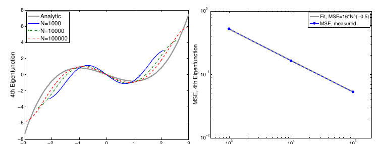
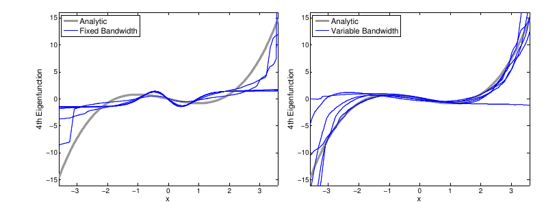
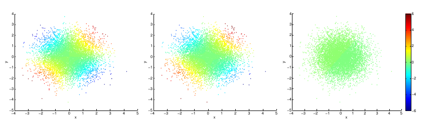
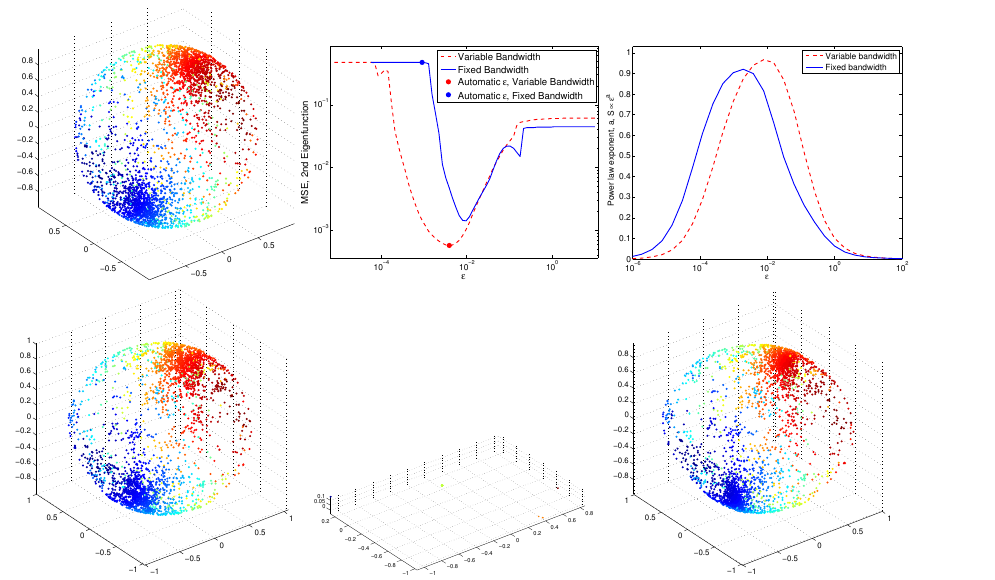
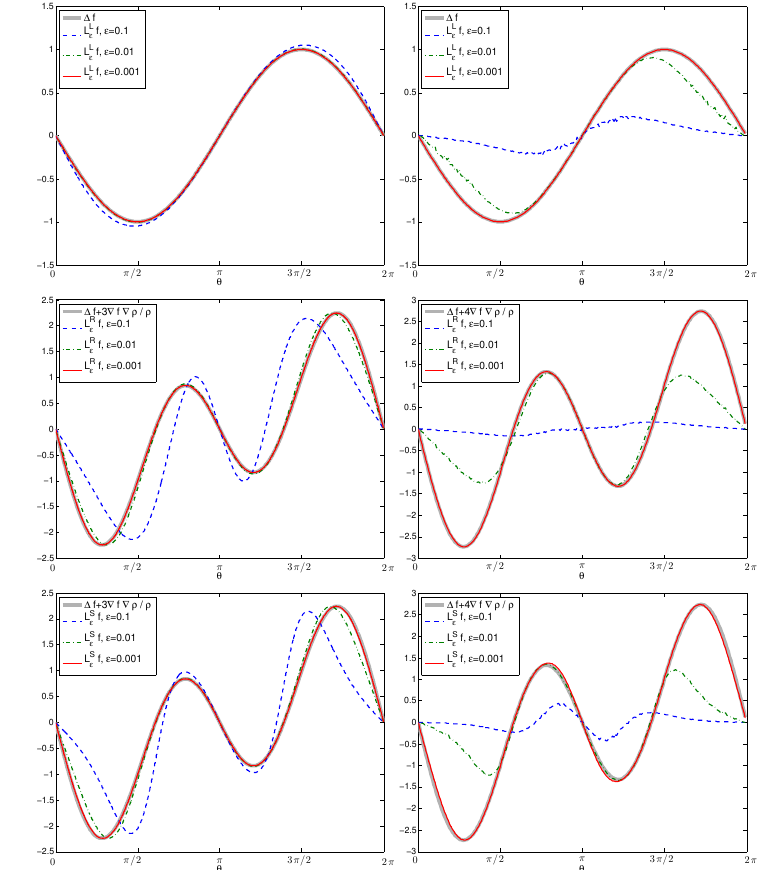

Paper: Berry, Tyrus; Harlim, John. “Variable Bandwidth Diffusion
Kernels.” Applied and Computational Harmonic Analysis 40(1):68-96, 2016.
DOI: 10.1016/j.acha.2015.01.001. arXiv:1406.5064. Reviewer: Reviewer-P04
Auditor: Auditor-P04 Status: revised after audit Date: 2026-05-15 Source
manifest ID: P04 Canonical reading copy:
literature/conductance_kernel_laplacian_review/sources/pdf/P04_berry_harlim_variable_bandwidth_diffusion_kernels.pdf
A mathematically capable reader should be comfortable with:
The paper asks what happens when the Gaussian-like affinity between two data points uses a local scale instead of one global bandwidth. In a fixed-bandwidth graph, two points at a given Euclidean distance receive the same edge weight no matter whether they lie in a dense region or a sparse tail. In a variable-bandwidth graph, the denominator of the kernel includes a local scale \(\rho(x)\rho(y)\), so the same distance can be treated as “near” in sparse regions and “far” in dense regions.
The main message is subtle: changing bandwidth is not merely a
numerical stabilization trick. It changes the continuum differential
operator unless the normalization parameters are chosen carefully. For
\(\rho=q^\beta\), where q
is the sampling density, the limit is \(\Delta
f + c1 \nabla f dot \nabla q/q\); the coefficient c1
depends on both the diffusion-map normalization \(\alpha\) and the bandwidth exponent
beta. The finite-sample error also depends on
q and \(\rho\), and
fixed-bandwidth kernels can have unbounded pointwise errors where
q approaches zero. This is the paper’s strongest connection
to local-scale conductance: adaptive bandwidth can preserve effective
connectivity in sparse regions while controlling the operator that the
graph approximates.
The paper generalizes the asymptotic and finite-sample theory for diffusion maps and Laplacian eigenmaps from fixed-bandwidth kernels to self-tuned or variable-bandwidth kernels. The motivation is stated in the Abstract and Section 1 (PDF pp. 1-2): practical kernel methods often use self-tuned kernels, but much of the theory available at the time covered only fixed bandwidths. The authors cite Zelnik-Manor and Perona’s self-tuning spectral clustering as a practical example, and Coifman-Lafon diffusion maps plus Singer’s finite-sample analysis as the theoretical background.
The key gap is that previous general convergence work by Ting, Huang, and Jordan gave limiting operators for broad graph Laplacian sequences but not rates or discrete error bounds (Section 1, PDF p. 2). Berry and Harlim provide asymptotic expansions and pointwise high-probability errors for discrete variable-bandwidth operators. The most practically important case is non-compact or effectively open data support, where the sampling density is not bounded away from zero.
The method uses a symmetric variable-bandwidth kernel
\[ \begin{aligned} K_{\epsilon}^S(x,y) &= h( \Vert x-y\Vert ^2 / (\epsilon \rho(x) \rho(y)) ) \end{aligned} \]
from equation (2) on PDF p. 1, then applies a density correction and left Markov normalization analogous to diffusion maps. The bandwidth function is often chosen as \(\rho=q^\beta\) or estimated from data using a nearest-neighbor pilot density estimate (Section 3, PDF pp. 5-6).
The theoretical development has two layers:
\[ \begin{aligned} L_{\alpha,\rho} f &= \Delta f \\ + 2(1-\alpha) \nabla f dot \nabla q/q \\ + (d+2) \nabla f dot \nabla \rho/\rho \end{aligned} \]
from Theorem 1 and equation (6), PDF p. 3.
N, and \(\epsilon\)
(Theorem 1, equation (5), PDF p. 3; Appendix B, PDF pp. 22-26).The paper’s fixed-bandwidth baseline is equation (1), PDF p. 1:
\[ \begin{aligned} K_{\epsilon}(x,y) &= h( \Vert x-y\Vert ^2 / \epsilon ). \end{aligned} \]
The variable-bandwidth kernel is equation (2), PDF p. 1:
\[ \begin{aligned} K_{\epsilon}^S(x,y) &= h( \Vert x-y\Vert ^2 / (\epsilon \rho(x)\rho(y)) ). \end{aligned} \]
For fixed bandwidth, diffusion maps approximate the Kolmogorov operator in equation (3), PDF p. 2:
\[ \begin{aligned} L_{\alpha} f &= \Delta f + (2-2alpha) \nabla f dot \nabla q/q. \end{aligned} \]
Singer’s fixed-bandwidth high-probability error, quoted as equation (4), PDF p. 3, is:
\[ \begin{aligned} L_{\epsilon,\alpha} f(x_{i}) \\ &= (1/\epsilon) [ sum_{j} K_{\epsilon}(x_{i},x_{j}) f(x_{j}) / sum_{j} K_{\epsilon}(x_{i},x_{j}) - f(x_{i}) ] \\ &= L_{\alpha} f(x_{i}) + O( \epsilon, \Vert \nabla f(x_{i})\Vert / \sqrt(N \epsilon^{1+d/2}) ) \end{aligned} \]
where the paper writes the denominator as \(\sqrt(N \epsilon^{1/2+d/4})\) after the square-root convention in the displayed bound.
Theorem 1, PDF p. 3, defines:
\[ \begin{aligned} F_{i}(x_{j}) &= K_{\epsilon}^S(x_{i},x_{j}) f(x_{j}) / [q_{\epsilon}^S(x_{i})^\alpha q_{\epsilon}^S(x_{j})^\alpha] \\ G_{i}(x_{j}) &= K_{\epsilon}^S(x_{i},x_{j}) / [q_{\epsilon}^S(x_{i})^\alpha q_{\epsilon}^S(x_{j})^\alpha] \\ q_{\epsilon}^S(x_{i}) &= sum_{l} K_{\epsilon}^S(x_{i},x_{l}) / \rho(x_{i})^d. \end{aligned} \]
The corresponding discrete operator in equation (5), PDF p. 3, is:
\[ \begin{aligned} L_{\epsilon,\alpha}^S f(x_{i}) \\ &= (1 / [\epsilon m \rho(x_{i})^2]) \\ [ sum_{j} F_{i}(x_{j}) / sum_{j} G_{i}(x_{j}) - f(x_{i}) ]. \end{aligned} \]
With high probability,
\[ \begin{aligned} L_{\epsilon,\alpha}^S f(x_{i}) \\ &= L_{\alpha,\rho} f(x_{i}) \\ + O( \epsilon, \\ q(x_{i})^{1/2} \rho(x_{i})^{-d/2} / \sqrt(N \epsilon^{4+d/2}), \\ \Vert \nabla f(x_{i})\Vert q(x_{i})^{-(1/2-2alpha+2dalpha)} \\ \rho(x_{i})^{-(d/2+1)} / \sqrt(N \epsilon^{1+d/2}) ) \end{aligned} \]
using the paper’s displayed equation (5) notation:
\[ \begin{gathered} O( \epsilon, \\ q(x_{i})^{1/2} \rho(x_{i})^{-d/2} / [\sqrt(N) \epsilon^{2+d/4}], \\ \Vert \nabla f(x_{i})\Vert q(x_{i})^{-(1/2-2alpha+2dalpha)} \\ \rho(x_{i})^{-(d/2+1)} / [\sqrt(N) \epsilon^{1/2+d/4}] ). \end{gathered} \]
The continuum operator is equation (6), PDF p. 3:
\[ \begin{aligned} L_{\alpha,\rho} f &= \\ \Delta f + 2(1-\alpha) \nabla f dot \nabla q/q \\ + (d+2) \nabla f dot \nabla \rho/\rho. \end{aligned} \]
Corollary 1, equation (7), PDF p. 3, specializes to \(\rho=q^\beta+O(\epsilon)\):
\[ \begin{aligned} L_{\epsilon,\alpha,\beta}^S f(x_{i}) \\ &= L_{\alpha,\beta} f(x_{i}) \\ + O( \epsilon, \\ q(x_{i})^{(1-d \beta)/2} / [\sqrt(N) \epsilon^{2+d/4}], \\ \Vert \nabla f(x_{i})\Vert q(x_{i})^{-c2} / [\sqrt(N) \epsilon^{1/2+d/4}] ). \end{aligned} \]
The limiting operator is equation (8), PDF p. 3:
\[ \begin{aligned} L_{\alpha,\beta} f &= \Delta f + c1 \nabla f dot \nabla q/q, \\ c1 &= 2 - 2alpha + d \beta + 2 \beta, \\ c2 &= 1/2 - 2alpha + 2dalpha + d \beta/2 + \beta. \end{aligned} \]
For non-compact manifolds where q may approach zero,
Section 2 (PDF p. 4) says the error powers should satisfy:
\[ \begin{gathered} (1-d \beta)/2 > 0, \\ c2 < 0. \end{gathered} \]
The paper emphasizes \(\beta<0\), especially \(\beta=-1/2\), because it enlarges bandwidth in sparse regions and shrinks it in dense regions. For gradient flow estimation with \(c1=1\), \(\beta=-1/2\) gives \(\alpha=-d/4\); for the Laplacian with \(c1=0\), \(\beta=-1/2\) gives \(\alpha=1/2-d/4\) (Section 2, PDF p. 4).
Section 3, equation (9), PDF p. 5, gives the stochastic process target:
\[ \begin{aligned} dx &= -c1 \nabla U(x) dt + \sqrt(2) dW_{t}, \\ q(x) proportional to \exp(-c1 U(x)). \end{aligned} \]
Its backward generator is \(L_{\alpha,\beta}\) in equation (8).
The nearest-neighbor pilot bandwidth and density estimate in Section 3, equation (10), PDF p. 5, are:
\[ \begin{aligned} rho_{0}(x_{i}) &= [ (1/(k0-1)) sum_{j=2}^{k0} \Vert x_{i} - x_{I(i,j)}\Vert ^2 ]^{1/2}, \\ epsilon_{0}^{1/2} &= (1/N) sum_{i} rho_{0}(x_{i}), \\ tilde rho_{0} &= rho_{0} / epsilon_{0}^{1/2}, \end{aligned} \]
and
\[ \begin{aligned} q_{0}(x_{i}) &= \\ (2pi)^{-d/2} / [rho_{0}(x_{i})^d N] \\ sum_{l&=1}^N \exp( -\Vert x_{i}-x_{l}\Vert ^2 / [2 rho_{0}(x_{i})rho_{0}(x_{l})] ) \end{aligned} \]
equivalently displayed with \(epsilon_{0}\) and \(tilde rho_{0}\) in equation (10), with error
\[ \begin{aligned} q_{0}(x_{i}) &= q(x_{i}) + O( epsilon_{0}, \\ \sqrt(q(x_{i})) / [N^{1/2} epsilon_{0}^{d/4} tilde rho_{0}(x_{i})^{d/2}] ). \end{aligned} \]
The paper then uses \(\rho=q_{0}^\beta=q^\beta+O(epsilon_{0})\) and notes that balancing the errors gives \(epsilon_{0}=O(N^{-1/(1+d/4)})\) (Section 3, PDF p. 5).
The numerical implementation kernel and normalizations, Section 3, PDF pp. 5-6, are:
\[ \begin{aligned} K_{\epsilon}^S(x_{i},x_{j}) &= \\ \exp( -\Vert x_{i}-x_{j}\Vert ^2 / [4 \epsilon \rho(x_{i})\rho(x_{j})] ), \\ q_{\epsilon}^S(x_{i}) &= \\ sum_{j&=1}^N K_{\epsilon}^S(x_{i},x_{j}) / \rho(x_{i})^d, \\ K_{\epsilon,\alpha}^S(x_{i},x_{j}) &= \\ K_{\epsilon}^S(x_{i},x_{j}) / [q_{\epsilon}^S(x_{i})^\alpha q_{\epsilon}^S(x_{j})^\alpha], \\ q_{\epsilon,\alpha}^S(x_{i}) &= \\ sum_{j&=1}^N K_{\epsilon,\alpha}^S(x_{i},x_{j}), \\ hat K_{\epsilon,\alpha}^S(x_{i},x_{j}) &= \\ K_{\epsilon,\alpha}^S(x_{i},x_{j}) / q_{\epsilon,\alpha}^S(x_{i}), \\ L_{\epsilon,\alpha,\beta}^S(x_{i},x_{j}) &= \\ [hat K_{\epsilon,\alpha}^S(x_{i},x_{j}) - delta_{ij}] / [\epsilon \rho(x_{i})^2]. \end{aligned} \]
For eigensolvers, Section 3 constructs a symmetric conjugate. With \(D_{ii}=q_{\epsilon,\alpha}^S(x_{i})\), \(P_{ii}=\rho(x_{i})\), and \(K_{ij}=K_{\epsilon,\alpha}^S(x_{i},x_{j})\),
\[ \begin{aligned} L &= P^{-2}(D^{-1}K - I)/\epsilon, \\ S &= P D^{1/2}, \\ hat L &= (1/\epsilon)(S^{-1} K S^{-1} - P^{-2}), \end{aligned} \]
with entries
\[ \begin{aligned} hat L_{ij} &= \\ (1/[\epsilon \rho(x_{i})\rho(x_{j})]) \\ [ K_{\epsilon,\alpha}^S(x_{i},x_{j}) / \\ \sqrt(q_{\epsilon,\alpha}^S(x_{i})q_{\epsilon,\alpha}^S(x_{j})) \\ - delta_{ij} ]. \end{aligned} \]
Eigenvectors are normalized so that \(\Vert
phi_{vec}\Vert _{\mathbb{R}^{N}}=\sqrt(N)\), matching the Monte
Carlo \(L^2(q)\) norm (Section 3, PDF
p. 6). Sparse implementation keeps k nearest neighbors and
symmetrizes K as \((K+K^T)/2\) (Section 3, PDF pp. 6-7).
Appendix A gives the continuum operator derivation. It defines the integral operator in equation (A.1), PDF p. 14:
\[ \begin{aligned} G_{\epsilon}^S f &= \epsilon^{-d/2} int_{M} K_{\epsilon}^S(x,y) f(y) dV(y). \end{aligned} \]
It also defines right and left formulations:
\[ \begin{aligned} K_{\epsilon}^R(x,y) &= h( \Vert x-y\Vert ^2 / [\epsilon \rho(y)] ) (A.2, PDF p. 14) \\ K_{\epsilon}^L(x,y) &= h( \Vert x-y\Vert ^2 / [\epsilon \rho(x)] ) (A.3, PDF p. 15) \end{aligned} \]
Lemma 2, equation (A.4), PDF p. 15, extends the fixed-bandwidth expansion to non-compact manifolds under integrability and bounded-density assumptions:
\[ \begin{aligned} G_{\epsilon}(fq)(x) \\ &= m0 f(x)q(x) \\ + \epsilon m2[ omega(x)f(x)q(x) + \Delta(fq)(x) ] \\ + O(\epsilon^2). \end{aligned} \]
The left formulation yields \(L_{\epsilon}^L f = \Delta f + O(\epsilon)\) in equation (A.10), PDF p. 17. The right formulation yields the drifted operator
\[ \begin{aligned} L_{\epsilon}^R f &= \\ \Delta f + (d+2) \nabla \rho/\rho dot \nabla f + O(\epsilon) \end{aligned} \]
after equation (A.11), PDF p. 18. The symmetric formulation has expansion (A.12), PDF p. 19, and normalized limit (A.13):
\[ \begin{aligned} L_{\epsilon}^S f &= \\ (1/[\epsilon m \rho(x)^2]) [G_{\epsilon}^S f(x)/G_{\epsilon}^S 1(x) - f(x)] \\ &= \Delta f + (d+2) \nabla \rho/\rho dot \nabla f + O(\epsilon). \end{aligned} \]
For non-uniform sampling, Appendix A.5 defines the biased operator \(G_{\epsilon,q}^S(f)=G_{\epsilon}^S(fq)\), equation (A.15) for density expansion,
\[ \begin{aligned} G_{\epsilon,q}^S(1) \\ &= m0 \rho^d q [1 + \epsilon m(tilde omega + L^S q) + O(\epsilon^2)], \end{aligned} \]
and the right debiasing in equation (A.16):
\[ \begin{aligned} G_{\epsilon,q,\alpha}^S(f) &= \\ G_{\epsilon,q}^S( f \rho^{d \alpha} / G_{\epsilon,q}^S(1)^\alpha ). \end{aligned} \]
The normalized non-uniform result is equation (A.20), PDF p. 22:
\[ \begin{aligned} L_{\epsilon,\alpha}^S f(x) \\ &= \Delta f \\ + 2(1-\alpha) \nabla f dot \nabla q/q \\ + (d+2) \nabla f dot \nabla \rho/\rho \\ + O(\epsilon). \end{aligned} \]
With \(\rho=q^\beta\), equation (A.21), PDF p. 22, gives:
\[ \begin{aligned} L_{\epsilon,\alpha,\beta}^S f(x) \\ &= \Delta f + c1 \nabla f dot \nabla q/q + O(\epsilon). \end{aligned} \]
Appendix B defines the discrete density normalization factor in (B.1), PDF p. 23:
\[ \begin{aligned} q_{\epsilon}^S(x_{j}) &= sum_{l} K_{\epsilon}^S(x_{j},x_{l}) / \rho(x_{j})^d. \end{aligned} \]
The discrete ratio approximating the continuous operator is equation (B.2), PDF p. 23:
\[ \begin{gathered} L_{\epsilon,\alpha}^S f(x_{i}) \\ approx (1/[\epsilon m \rho(x_{i})^2]) \\ [sum_{j} F_{i}(x_{j}) / sum_{j} G_{i}(x_{j}) - f(x_{i})]. \end{gathered} \]
The density renormalization error is controlled by (B.7), PDF p. 25:
\[ \begin{aligned} q(x_{j})^{1/2} \rho(x_{j})^{-d/2} / [N^{1/2} \epsilon^{2+d/4}] &= O(1). \end{aligned} \]
The statistical bias error is controlled by (B.11), PDF p. 26:
\[ \begin{aligned} \Vert \nabla f(x_{i})\Vert q(x_{i})^{-(1/2-2alpha+2dalpha)} \\ \rho(x_{i})^{-(d/2+1)} \\ / [\sqrt(N) \epsilon^{1/2+d/4}] &= O(1). \end{aligned} \]
Figure 1 (Section 4, PDF p. 7) compares fixed bandwidth (\(\alpha=1/2, \beta=0\)) and variable bandwidth (\(\alpha=-1/4, \beta=-1/2\)) for the fourth eigenfunction of the 1D Ornstein-Uhlenbeck generator using 2000 deterministic quantile-spaced points from a standard normal density. Fixed bandwidth is visibly sensitive to \(\epsilon\); variable bandwidth matches the analytic curve across a wider range.
Figure 2 (Section 4, PDF p. 7) repeats the 1D Ornstein-Uhlenbeck experiment with 20000 quantile-spaced points. The variable-bandwidth MSE has a broad low-error region, while the fixed-bandwidth MSE remains poor over the tested range; the right panel shows the best fixed-bandwidth eigenfunction still failing in the tails.
Figure 3 (Section 4, PDF p. 8) tests a proposed fixed-bandwidth workaround: remove outliers. Even with deterministic samples and removal of \(\sqrt(N)\) low-probability points, the fixed-bandwidth approximation converges slowly; the authors estimate that matching the variable-bandwidth MSE of 0.002 from 1000 points would require about \(6\,10^7\) fixed-bandwidth points under the observed power law.

Figure 4 (Section 4, PDF p. 9) uses 10 randomly sampled 1D Ornstein-Uhlenbeck data sets with \(N=20000\). Fixed bandwidth is tuned over 65 epsilon values for each data set but still does not recover the analytic fourth eigenfunction well. Variable bandwidth is substantially better, though one random data set gives a poor estimate, consistent with the theorem’s pointwise high-probability nature.

Figure 5 (Section 4, PDF p. 10) studies the 2D Ornstein-Uhlenbeck process with standard Gaussian invariant measure and analytic fourth eigenfunction \(phi_{4}(x,y)=xy\). Variable bandwidth produces a visibly reasonable estimate; fixed bandwidth does not, despite empirical epsilon tuning.

Figure 6 (Section 5, PDF p. 11) studies the Laplacian on a unit circle sampled with density \(q(\theta)=(1/(4pi))(2+\cos(\theta))\). Variable bandwidth (\(\alpha=1/4, \beta=-1/2\)) yields lower MSE over a much wider epsilon range than fixed bandwidth (\(\alpha=1, \beta=0\)), both for deterministic inverse-CDF samples and perturbed samples. The right panel shows the automatic epsilon tuning statistic \(S(\epsilon) proportional to \epsilon^a\), whose maximum slope is near \(d/2=1/2\).

Figure 7 (Section 5, PDF p. 12) studies a non-uniformly sampled unit sphere. Variable bandwidth (\(\alpha=0, \beta=-1/2\)) is less sensitive to epsilon and works with the automatic tuning method. Fixed bandwidth (\(\alpha=1, \beta=0\)) can work only with careful tuning; the automatic epsilon is too small and disconnects sparse regions from the rest of the manifold.

Figure A.8 (Appendix A.4, PDF p. 20) numerically verifies that left-bandwidth kernels converge to \(\Delta f\), while right and symmetric bandwidth formulations include the drift \((d+2) \nabla \rho/\rho dot \nabla f\). It uses \(\rho(\theta)=\exp(\cos(\theta))\) on a circle and a torus.

Figure A.9 (Appendix A.5, PDF p. 23) numerically verifies the \(\rho=q^\beta\) expansion for non-uniform sampling on the circle. With \(\beta=-1/2\), \(\alpha=1/4\) recovers the Laplacian (\(c1=0\)), and \(\alpha=-1/4\) recovers the backward Kolmogorov operator with \(c1=1\).

Theorem 1 (Section 2, PDF p. 3) is the central claim: for a smooth function on a manifold without boundary and a density \(q\) that is bounded above and in \(L^1 \cap C^3\), the discrete variable-bandwidth operator converges pointwise with high probability to \(L_{\alpha,\rho}\) and has three error components: asymptotic bias \(O(\epsilon)\), density-renormalization sampling error, and ratio-estimator sampling error.
Corollary 1 (Section 2, PDF pp. 3-4) specializes the theory to \(\rho=q^\beta+O(\epsilon)\). This is the
bridge from local bandwidth to sampling-density-adaptive operators. It
identifies c1, the density drift in the limiting operator,
and c2, the exponent controlling sparse-density blow-up in
the finite-sample error.
Appendix A proves the continuum expansions. Its main conceptual result is that symmetric variable bandwidth acts like right bandwidth after a local coordinate scaling, which is why the term \((d+2) \nabla \rho/\rho dot \nabla f\) appears.
Appendix B proves the finite-sample rate by adapting Singer’s Chernoff-bound analysis. It shows that the density estimate error and the ratio-estimator error behave differently, and that fixed bandwidth places sampling density in the denominator of the operator-estimation error.
The results are pointwise for smooth functions, not a full spectral convergence theorem (Section 2, PDF p. 5; Section 6, PDF p. 13). The numerical experiments compare eigenfunctions, but the authors explicitly say extending spectral convergence to variable-bandwidth kernels is beyond the paper’s scope.
The theory excludes manifolds with boundary, especially non-compact manifolds with non-compact boundaries (Section 2, PDF pp. 4-5; Section 6, PDF p. 13). Fixed-bandwidth diffusion maps on compact manifolds have implicit Neumann boundary conditions, but the authors do not extend that proof here.
The recommended \(\rho=q^\beta\)
construction requires intrinsic dimension d, both for
choosing \(\alpha,\beta\) and for the
\(\rho^d\) density normalization
(Section 6, PDF p. 13). The paper suggests automatic epsilon tuning may
help estimate dimension but does not establish a robust
dimension-estimation method.
The kernels are isotropic scalar-bandwidth kernels. The authors mention anisotropic generalizations but leave them outside the paper (Section 6, PDF p. 13).
This paper is a key bridge between practical self-tuned graph kernels and diffusion-map continuum theory. It explains why variable bandwidth is more than a heuristic for clustering: with the correct normalization it can approximate Laplacians or gradient-flow generators, and with the wrong normalization it approximates a different drift-diffusion operator. It also makes a strong finite-sample argument that fixed bandwidth can fail on non-compact or heavy-tailed data because sparse-density points enter the graph as high-error locations.
For a conductance-kernel review, P04 is important because it links local affinity strength, local length scale, density normalization, and limiting differential operators in one explicit formula family. It is also the conceptual parent of later kNN self-tuned graph Laplacian theory.
\([explicit]\) Fixed affinity, equation (1), PDF p. 1:
\[ \begin{aligned} K_{\epsilon}(x,y) &= h( \Vert x-y\Vert ^2 / \epsilon ). \end{aligned} \]
\([explicit]\) Symmetric variable-bandwidth affinity, equation (2), PDF p. 1:
\[ \begin{aligned} K_{\epsilon}^S(x,y) &= h( \Vert x-y\Vert ^2 / [\epsilon \rho(x)\rho(y)] ). \end{aligned} \]
\([explicit]\) Gaussian implementation, Section 3, PDF p. 5:
\[ \begin{aligned} K_{\epsilon}^S(x_{i},x_{j}) &= \\ \exp( -\Vert x_{i}-x_{j}\Vert ^2 / [4 \epsilon \rho(x_{i})\rho(x_{j})] ). \end{aligned} \]
[derived] Local conductance interpretation for nearby
points: if \(\rho(y) approx \rho(x)\),
then a distance \(\delta=\Vert
x-y\Vert\) gets approximate affinity
\[ \begin{gathered} K(x,y) approx \exp( -\delta^2 / [4 \epsilon \rho(x)^2] ), \end{gathered} \]
so the local \(\exp(-1)\) length
scale is about \(2 \sqrt(\epsilon)
\rho(x)\). If \(\rho=q^{-1/2}\),
sparse regions with small q have larger local length scale
and therefore larger edge affinity at the same physical distance. This
is derived from the Section 3 Gaussian formula, not stated as a
conductance theorem by the authors.
\([explicit]\) Right and left bandwidth kernels in Appendix A, equations (A.2)-(A.3), PDF pp. 14-15:
\[ \begin{aligned} K_{\epsilon}^R(x,y) &= h( \Vert x-y\Vert ^2 / [\epsilon \rho(y)] ), \\ K_{\epsilon}^L(x,y) &= h( \Vert x-y\Vert ^2 / [\epsilon \rho(x)] ). \end{aligned} \]
\([explicit]\) The graph/diffusion operator is the row-normalized, density-debiased kernel operator
\[ \begin{aligned} L_{\epsilon,\alpha,\beta}^S(x_{i},x_{j}) &= \\ [hat K_{\epsilon,\alpha}^S(x_{i},x_{j}) - delta_{ij}] / [\epsilon \rho(x_{i})^2], \end{aligned} \]
from Section 3, PDF p. 6.
\([explicit]\) Its symmetric conjugate is
\[ \begin{aligned} hat L &= (1/\epsilon)(S^{-1} K S^{-1} - P^{-2}), \\ S &= P D^{1/2}, \\ P_{ii}&=\rho(x_{i}), \\ D_{ii}&=q_{\epsilon,\alpha}^S(x_{i}). \end{aligned} \]
This is used for eigenvalue computation (Section 3, PDF p. 6).
\([explicit]\) The continuum limit for arbitrary \(\rho\) is \(L_{\alpha,\rho}\) in equation (6), PDF p. 3.
\([explicit]\) The continuum limit for \(\rho=q^\beta\) is \(L_{\alpha,\beta}\) in equation (8), PDF p. 3.
The paper is about graph-based operator estimation, diffusion geometry, and spectral/eigenfunction recovery. Its numerical tasks are:
R and \(\mathbb{R}^{2}\);It is not a semi-supervised learning paper, but its results directly inform graph regression and graph signal smoothing because those methods depend on the graph operator induced by the chosen edge weights.
\([explicit]\) The Abstract, PDF p. 1, says variable-bandwidth kernels are common in applications, but existing theory mostly covers fixed bandwidths.
\([explicit]\) Section 1, PDF p. 2, says the main contribution is to extend Coifman-Lafon asymptotics and Singer’s discrete analysis to variable-bandwidth kernels and to give rigorous error bounds.
\([explicit]\) Section 1, PDF p. 2, says fixed-bandwidth errors become unbounded as sampling density approaches zero and that choosing bandwidth inversely proportional to density can control sparse-region errors.
\([explicit]\) Section 2, PDF p. 4, says \(\beta<0\) is expected to work best because it increases bandwidth in sparse regions and decreases bandwidth in dense regions.
\([explicit]\) Section 5, PDF pp. 10-12, motivates variable bandwidth on compact manifolds by reduced epsilon sensitivity under non-uniform sampling.
[derived] For local-scale conductance, the paper implies
that a density-adaptive graph can keep sparse-tail points connected
without globally increasing epsilon. A global epsilon large enough for
sparse regions would over-connect dense regions; a global epsilon small
enough for dense regions can disconnect sparse regions.
[derived] The paper also implies that local bandwidth
and diffusion-map density normalization should be considered jointly.
Changing only edge conductance without changing normalization changes
the limiting operator.
[derived] The finite-sample bounds imply that adaptive
bandwidth can be necessary for convergence in operator-estimation
settings on open/non-compact supports, not merely beneficial.
\([explicit]\) The operator drift changes with \(\rho\): equation (6) adds \((d+2) \nabla f dot \nabla \rho/\rho\). Thus eigenfunctions and diffusion geometry can change if bandwidth is altered without compensating \(\alpha,\beta\) choices.
\([explicit]\) For \(\rho=q^\beta\), equation (8) says the
density drift is governed by c1. Setting \(c1=0\) recovers the Laplacian and removes
density bias; setting \(c1=1\) recovers
the generator for the sampled gradient flow in the authors’
examples.
\([explicit]\) Figures 1-7 show that variable bandwidth improves eigenfunction recovery or epsilon stability in all tested non-uniform examples, with especially large benefits on non-compact Gaussian examples and sparse regions of the sphere.
[derived] For graph smoothing, the practical effect is a
spatially varying smoothing length. In sparse regions, \(\rho=q^{-1/2}\) makes the smoother borrow
from farther neighbors; in dense regions, it remains local. The
continuum effect is not just “more smoothing”: it is a specific
diffusion-plus-drift operator controlled by \(\alpha,\beta,d\).
P04 is directly about adaptive-scale graph construction. It formalizes the same intuition as self-tuned spectral clustering, but in a diffusion-map/operator-estimation framework with continuum limits and finite-sample error terms.
For conductance comparators, the most portable formula is the Section 3 Gaussian:
\[ \begin{aligned} w_{ij} &= \exp( -\Vert x_{i}-x_{j}\Vert ^2 / [4 \epsilon rho_{i} rho_{j}] ). \end{aligned} \]
If \(rho_{i}=q_{i}^\beta\), this becomes a density-adaptive conductance. If \(\beta=-1/2\), then sparse regions have larger local scale. The kernel itself is symmetric, but subsequent Markov normalizations and the final \(rho_{i}^{-2}\) generator scaling make the operator non-symmetric unless one uses the symmetric conjugate for eigensolvers.
The paper does not claim that every self-tuned kernel recovers the Laplacian. It shows the opposite: variable bandwidth adds drift unless \(\alpha,\beta\) are chosen to cancel density effects.
The paper does not prove spectral convergence for variable-bandwidth kernels, despite using eigenfunction experiments.
The paper does not handle non-compact manifolds with boundary.
The paper does not give a ready-made method for intrinsic dimension estimation; it only suggests an epsilon-tuning slope heuristic may help.
The paper does not define conductance for gflow or SIMODS directly. It defines kernel affinities and operators whose edge weights may be used as conductances in a graph construction.
P04 should be kept distinct from current gflow
overlap-density smoothing semantics. The current overlap-density
smoother should not be retroactively described as Berry-Harlim
variable-bandwidth diffusion unless it actually uses the paper’s \(\rho\), \(q_{\epsilon}^S\), \(\alpha\), and \(\rho^{-2}\) generator normalization.
The paper is most relevant to planned length/kernel-conductance comparators:
For SIMODS narrative, P04 supports the idea that local scale is an operator-design parameter. It also warns that sparse-region robustness from larger bandwidth comes with a drift term and dimension-dependent normalization.
Reproduced cropped figure panels for Figures 1–7 and Appendix Figures
A.8–A.9 are managed by paper_figure_screenshots.yml and
embedded in the generated HTML memo next to the primary figure
descriptions. These are internal-review cropped figure panels from the
canonical reading copy, not manuscript-ready reused figures.
Created:
literature/conductance_kernel_laplacian_review/figures/P04_local_bandwidth_conductance_curve.png
This original figure illustrates the Section 3 Gaussian implementation formula with a 1D Gaussian toy density and \(\rho=q^{-1/2}\). It shows relative density, local length scale \(2 \sqrt(\epsilon) \rho(x)\), and the approximate edge affinity for a fixed small displacement. It is meant to clarify the derived local-conductance implication: sparse regions receive larger bandwidth and therefore higher affinity for the same physical separation.

| Claim | Label | Source reference | Notes |
|---|---|---|---|
| Fixed kernels use \(K_{\epsilon}(x,y)=h(\Vert x-y\Vert ^2/\epsilon)\). | explicit | Eq. (1), Section 1, PDF p. 1 | Baseline fixed bandwidth. |
| Variable kernels use \(K_{\epsilon}^S(x,y)=h(\Vert x-y\Vert ^2/(\epsilon \rho(x)\rho(y)))\). | explicit | Eq. (2), Section 1, PDF p. 1 | Symmetric local scale. |
| Diffusion-map fixed-bandwidth limit is \(\Delta f + (2-2alpha) \nabla f dot \nabla q/q\). | explicit | Eq. (3), Section 2, PDF p. 2 | Recovers Laplacian at \(\alpha=1\). |
| Theorem 1 gives pointwise high-probability errors for the discrete variable-bandwidth operator. | explicit | Theorem 1, Eq. (5), PDF p. 3 | Three error components. |
| Arbitrary \(\rho\) adds \((d+2) \nabla f dot \nabla \rho/\rho\) to the limiting operator. | explicit | Eq. (6), PDF p. 3; Eq. (A.20), PDF p. 22 | Core operator effect. |
| \(\rho=q^\beta\) yields \(L_{\alpha,\beta}=\Delta f+c1 \nabla f dot \nabla q/q\). | explicit | Corollary 1, Eq. (8), PDF p. 3 | \(c1=2-2alpha+d \beta+2 \beta\). |
Sparse-region errors are controlled by c2; fixed
bandwidth can blow up as \(q\to0\). |
explicit | Corollary 1 discussion, PDF p. 4 | For \(\beta=0\), \(\alpha>0\), \(c2>0\). |
| \(\beta<0\) increases bandwidth in sparse regions and decreases it in dense regions. | explicit | Section 2, PDF p. 4 | Author’s stated intuition. |
| The practical Gaussian affinity is \(\exp(-\Vert x_{i}-x_{j}\Vert ^2/(4 \epsilon rho_{i} rho_{j}))\). | explicit | Section 3, PDF p. 5 | Conductance-ready formula. |
| For nearby points, local length scale is approximately \(2 \sqrt(\epsilon) \rho(x)\). | derived | Section 3 Gaussian formula, PDF p. 5 | Derived by setting exponent to -1 and \(\rho(y) approx \rho(x)\). |
| The pilot density estimate uses kNN scale \(rho_{0}\) and produces \(q_{0}=q+O(\ldots)\). | explicit | Eq. (10), Section 3, PDF p. 5 | Used to set \(\rho=q_{0}^\beta\). |
| Sparse matrices are built with kNN truncation and symmetrized by \((K+K^T)/2\). | explicit | Section 3, PDF pp. 6-7 | Implementation detail. |
| 1D and 2D Ornstein-Uhlenbeck experiments show fixed bandwidth failing in sparse tails. | explicit | Figures 1-5, Section 4, PDF pp. 7-10 | Empirical validation of sparse-density error story. |
| Circle and sphere experiments show reduced epsilon sensitivity for variable bandwidth on compact non-uniform data. | explicit | Figures 6-7, Section 5, PDF pp. 11-12 | Compact-manifold evidence. |
| Variable bandwidth is necessary for convergence in some operator-estimation problems with densities not bounded away from zero. | explicit | Conclusion, PDF p. 13 | Author claim. |
| The paper does not prove spectral convergence. | explicit | Section 2, PDF p. 5; Section 6, PDF p. 13 | Only pointwise convergence is proved. |
| P04 informs planned SIMODS length/kernel-conductance comparators but is not identical to current overlap-density smoothing. | derived | Whole paper plus local project distinction | The paper gives kernel/operator formulas, not current gflow semantics. |
d be fixed from known SIMODS geometry
or estimated from data when using \(\beta !=
0\)?Auditor-P04 flagged Eq. (4) denominator wording. The final synthesis should preserve the paper’s displayed high-probability denominator convention and avoid translating it into a different square-root form unless the algebra is shown explicitly.
The paper’s \(\Delta\) sign convention should be stated wherever Eq. (6) or the generator \(L_{\alpha,\rho}\) is summarized, because sign conventions differ across graph Laplacian and PDE communities.
SIMODS/gflow clarification for synthesis: P04 supports
variable-bandwidth kernel-conductance comparators and density-normalized
operator variants. It does not describe the current
fit.rdgraph.regression() overlap-density /
Riemannian-complex conductance.
Any phrase such as “conceptual parent” for later adaptive
smoothers should be labeled contextual, not attributed
directly to Berry and Harlim.
2026-05-15: Drafted by Reviewer-P04 from the canonical P04 PDF. Rendered and visually inspected pages containing Figures 1-7 and Appendix Figures A.8-A.9. Created one original explanatory conductance/local-bandwidth figure.